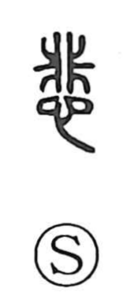

悲

Uncategorized
Kun: kanashii, kanashimu | On: hi
sadness ・ sorrow ・ to grieve
Explanation
悲 is a phono-semantic compound: 非 acts as the phonetic element, giving the on reading hi, while 心, the heart, anchors its meaning in feeling. The Shuowen glosses it as itamu, to ache, pointing to the inner pain of intense grief. From that core it naturally broadens to sorrowful tones in the world around us, coloring a plaintive sound, the lonely mood of autumn, or a bleak wind, as seen in compounds like 悲音, 悲秋, and 悲風. A related graph built from the same 非 and 心 evokes writhing in agony, further underscoring the depth of emotion contained in 悲.